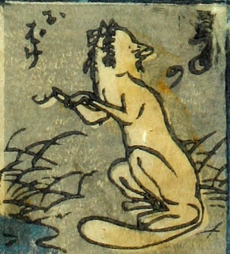

獣；ケモノ，狐；キツネ

獣のお化け。狐のような獣が顔を後ろに向け、前脚を上げて、座っている。
著作者：芳盛／出典：親書誌：U426_nichibunken_0073：しん板化物尽し；シンパンバケモノヅクシ／日付：2006／資源識別子：U426_nichibunken_0073_0039_0000
Copyright (c)2010- International Research Center for Japanese Studies, Kyoto, Japan. All rights reserved.